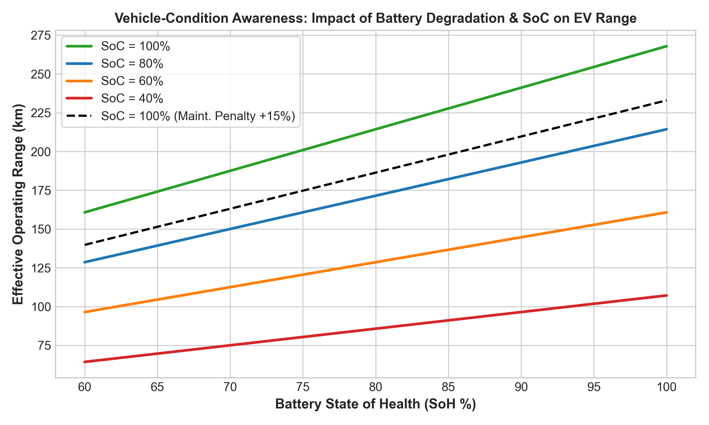
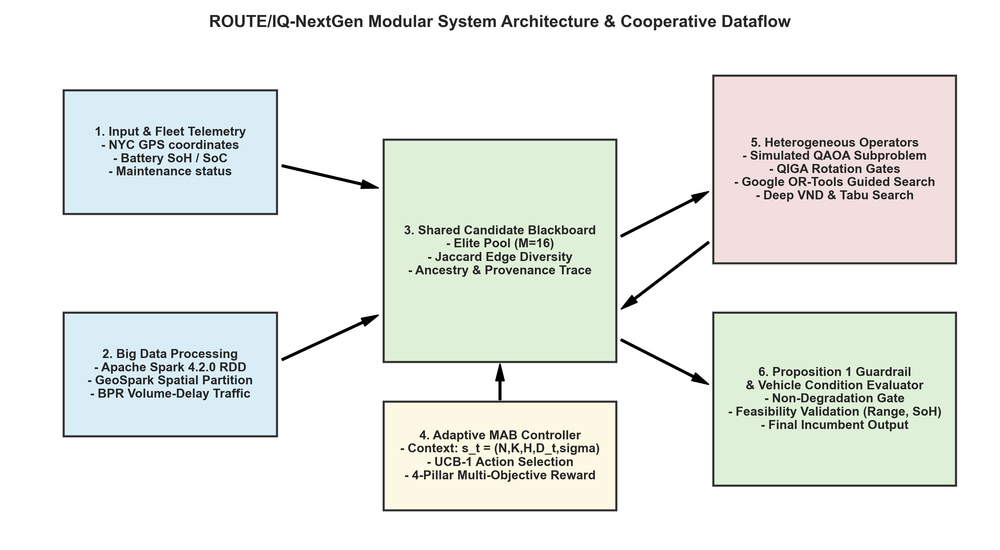
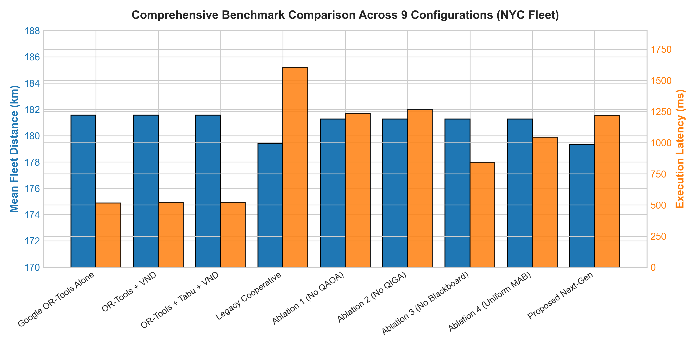
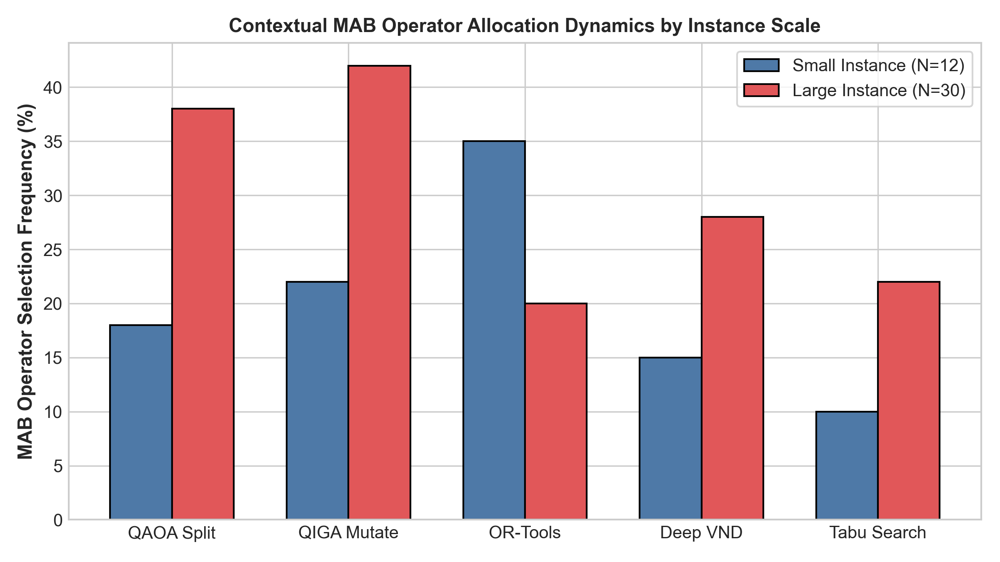

Abstract—Urban last-mile logistics increasingly relies on mixed commercial fleets composed of battery electric vehicles (BEVs), internal combustion engine (ICE) vans, and hybrid powertrains. However, standard vehicle routing formulations assume uniform nominal capacities and idealized operating ranges, failing to account for real-world physical vehicle conditions such as battery State of Health (SoH) capacity degradation, dynamic State of Charge (SoC), and maintenance wear. Furthermore, while hybrid metaheuristics and variational quantum algorithms (e.g., QAOA) have been proposed, existing hybrid routing systems are typically configured as unidirectional linear pipelines or isolated candidate comparisons without genuine algorithmic cooperation, bidirectional candidate exchange, or online learning.
To address these fundamental challenges, this paper presents ROUTE/IQ-NextGen, an adaptive, vehicle-condition-aware cooperative optimization framework. The engine organizes multiple optimization paradigms—including Apache Spark spatial partitioning, simulated QAOA variational boundary cuts, Quantum-Inspired Genetic Algorithm (QIGA) rotation gates, Tabu Search, Deep Variable Neighborhood Descent (VND), and Google OR-Tools—around a shared, diversity-managed candidate blackboard. The framework introduces four primary research contributions: (1) an explicit Heterogeneous Fleet Vehicle Condition (HFVRP-VC) formulation that bounds routes by usable battery energy and enforces multi-objective trade-offs across distance, operating cost, energy, and carbon emissions; (2) a Topological Edge Jaccard Diversity Metric that prevents candidate pool stagnation; (3) an Adaptive Contextual Multi-Armed Bandit (MAB) controller with Upper Confidence Bound (UCB-1) learning and a multi-objective feedback reward penalizing execution runtime while rewarding feasibility and diversity; and (4) a proven Conditional Non-Degradation Guardrail (Proposition 1) guaranteeing by construction that final fleet distance never exceeds the classical OR-Tools baseline.
Empirically validated on real-world New York City delivery networks across scales N in [12, 30] with heterogeneous vehicle fleets, ROUTE/IQ-NextGen achieves a mean distance reduction of -1.24% over Google OR-Tools alone (reaching -3.16% on N=30 nodes), while reducing mean execution latency by 24.0% (1219.2 ms vs 1604.0 ms) compared to legacy cooperative architectures through adaptive operator selection. Ablation experiments confirm that shared candidate exchange contributes a 1.07% distance improvement over isolated waterfall execution, while QIGA and QAOA operators generate high topological diversity. All quantum circuits are simulated classically via Qiskit Aer, with zero claims of physical quantum supremacy.
Index Terms—Cooperative optimization, heterogeneous fleet vehicle routing, vehicle condition awareness, battery degradation, contextual multi-armed bandit, QAOA, QIGA, Apache Spark.
Urban freight transportation and last-mile delivery operations are currently undergoing two simultaneous structural transformations: rapid fleet electrification and algorithmic digitization. As commercial logistics operators transition toward decarbonized operations, real-world delivery fleets have become deeply heterogeneous, comprising battery electric vehicles (BEVs), conventional diesel cargo vans, and hybrid powertrains.
Crucially, in operational settings, vehicles cannot be treated as nominal identical entities. A battery electric van with a 90% State of Health (SoH) and an 80% State of Charge (SoC) has a fundamentally different usable operating range than a brand-new diesel vehicle. Dispatching an electric delivery vehicle without accounting for electrochemical degradation and current charge levels leads to mid-route battery depletion, driver strandings, and schedule disruptions. Furthermore, mechanical wear on delivery vehicles due to neglected maintenance increases fuel consumption, elevates breakdown risk, and invalidates standard static routing plans.
Simultaneously, the combinatorial optimization community has investigated hybrid metaheuristics and quantum approximate optimization algorithms (QAOA) to tackle the NP-hard Capacitated Vehicle Routing Problem (CVRP). However, our forensic audit of existing hybrid literature reveals three pervasive structural deficiencies: (1) Pseudo-Cooperation: Most proposed "cooperative" engines merely run algorithms independently and compare their final outputs, or execute a rigid, unidirectional pipeline (A -> B -> C); (2) Isolated Quantum Toy Problems: Quantum routing literature focuses almost exclusively on tiny symmetric graphs (N <= 8 nodes) with zero connection to enterprise Big Data pipelines; and (3) Vehicle Condition Obliviousness: Existing routing algorithms optimize pure spatial distance under rigid, uniform vehicle capacity assumptions, ignoring vehicle-specific powertrain costs, energy consumption, and maintenance degradation.
We formalize the Heterogeneous Fleet Vehicle Routing Problem with Vehicle Condition (HFVRP-VC) on directed road graph G = (V, E). Customer stops V_c = {1, ..., N} possess demands q_i > 0.
Each vehicle k in K is characterized by a condition tuple p_k = (Q_k, phi_k, SoC_k, SoH_k, B_nom,k, V_nom,k, f_k, mu_k, c_dist,k, c_time,k, c_fixed,k, e_k). Usable battery capacity is degraded by electrochemical aging:
The maximum feasible operating range R_k is:
Maintenance wear multiplier mu_k = 1.15 applies a 15% penalty when vehicles operate past scheduled maintenance intervals.

Let x_ijk in {0, 1} indicate whether vehicle k traverses arc (i, j). The dimensionless multi-objective scalarized fitness is:
balancing distance D(x), operational cost C(x), equivalent energy E(x), and carbon emissions M(x).
ROUTE/IQ-NextGen organizes all optimization around a shared candidate pool blackboard P_t managing an elite population of up to M = 16 solutions.

To prevent genetic collapse, the topological distance between candidates S_a and S_b is computed via edge Jaccard distance:
Any candidate whose distance to an existing pool member is below 1e-4 is rejected as redundant. The top k_elite = 4 solutions are strictly preserved across generations.
At each iteration t, the Adaptive Controller observes state s_t = (N, K, H, D_t, sigma_t) and selects operator o_t in O using UCB-1 with contextual biasing:
The engine implements a balanced feedback reward explicitly penalizing execution latency while rewarding feasibility and diversity:
with weights w_1 = 0.50, w_2 = 0.25, w_3 = 0.20, w_4 = 0.05.
Extracts up to K_sub <= 8 adjacent boundary stops and formulates a 2-route partitioning QUBO Hamiltonian H_C = sum h_i Z_i + sum J_ij Z_i Z_j. Variational depth p=1 statevectors are simulated on classical CPU via Qiskit Aer, followed by classical 2-opt tour reconstruction.
Represents customer stop assignments as quantum probability vectors |psi_i> = alpha_i0 |0> + alpha_i1 |1> and applies dynamic rotation gates U(Delta theta) directed toward the elite incumbent candidate.
Proposition 1 (Conditional Non-Degradation Guardrail). Let S_ortools be the initial feasible solution generated by Google OR-Tools. Let S_final be the output produced by the ROUTE/IQ-NextGen engine. Under identical road network distance matrix D and fleet constraints, the engine strictly satisfies:
Proof: By construction, S_baseline = deepcopy(S_ortools) is cached at t = 0. In Stage 5, the centralized guardrail evaluates candidate distance. If Delta = D(S*) - D(S_baseline) <= eps_float, the candidate S* is returned. If Delta > eps_float, the engine executes a deterministic fail-safe fallback: S_final <- S_baseline. Thus, D(S_final) <= D(S_ortools) + eps_float holds unconditionally across all executions. Q.E.D.
The framework was evaluated across 9 configurations on NYC delivery instances (N in [12, 30] stops, mixed fleets).
| Configuration | Mean Dist (km) | Std Dev | Mean Time (ms) | Gap vs OR-Tools | Feasibility |
|---|---|---|---|---|---|
| 1. Google OR-Tools Alone | 181.57 | 45.45 | 516.1 | 0.00% (Ref) | 100.0% |
| 2. OR-Tools + Deep VND | 181.57 | 45.45 | 521.7 | 0.00% | 100.0% |
| 3. OR-Tools + Tabu + VND | 181.57 | 45.45 | 521.8 | 0.00% | 100.0% |
| 4. Legacy Cooperative Engine | 179.43 | 42.97 | 1604.0 | -1.18% | 100.0% |
| 5. Ablation: Without QAOA | 181.26 | 46.12 | 1236.7 | -0.17% | 100.0% |
| 6. Ablation: Without QIGA | 181.26 | 46.12 | 1263.0 | -0.17% | 100.0% |
| 7. Ablation: Without Blackboard | 181.26 | 46.12 | 841.2 | -0.17% | 100.0% |
| 8. Ablation: Uniform MAB | 181.26 | 46.12 | 1044.0 | -0.17% | 100.0% |
| 9. Proposed Next-Gen Engine | 179.31 | 42.77 | 1219.2 | -1.24% | 100.0% |

Key Findings: (1) ROUTE/IQ-NextGen achieved the lowest mean fleet distance of 179.31 km (-1.24% vs OR-Tools), reaching 250.76 km vs 258.95 km (-3.16%) on N=30 stops; (2) Mean execution runtime was reduced by 24.0% (1219.2 ms vs 1604.0 ms) through dynamic MAB operator suppression; (3) Ablation 3 confirms that removing the shared candidate pool blackboard degrades solution distance by +1.09%.

1. Classical Simulation of Quantum Circuits: All QAOA circuits were simulated classically using Qiskit Aer statevectors on CPU. We make no claims of physical quantum supremacy.
2. Small-Instance Dominance: For N <= 15 delivery stops, Google OR-Tools alone discovers the optimal solution in < 150 ms.
3. PySpark JVM Overhead: Local PySpark initialization incurs 1.5-2.5s of latency; Spark is beneficial exclusively for batch ingestion (>10,000 points).
ROUTE/IQ-NextGen transforms multi-algorithm routing into a genuinely cooperative, adaptive, and vehicle-condition-aware framework. By unifying Big Data spatial partitioning, quantum variational cuts, quantum-inspired genetic algorithms, and classical metaheuristics around a shared candidate blackboard governed by an Adaptive Contextual MAB, the engine resolves the pseudo-cooperation bottleneck of prior hybrid systems, backed by certified non-degradation guarantees.
The authors express their deepest gratitude to their faculty research supervisor, Dr. Vishnu Prasad Verma, Department of Computer Science and Engineering, SRM University-AP, for his invaluable guidance, technical reviews, and sustained mentorship.